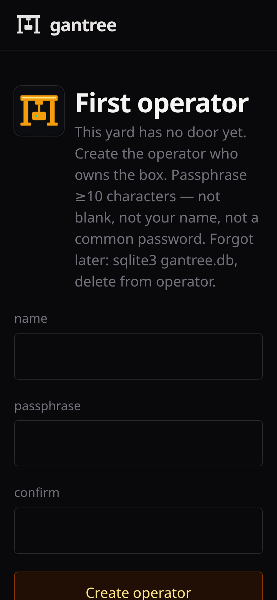
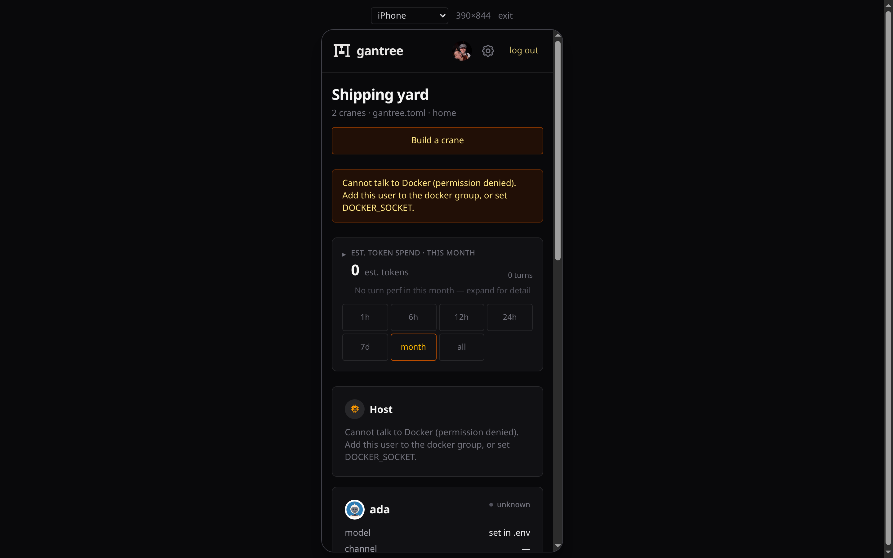
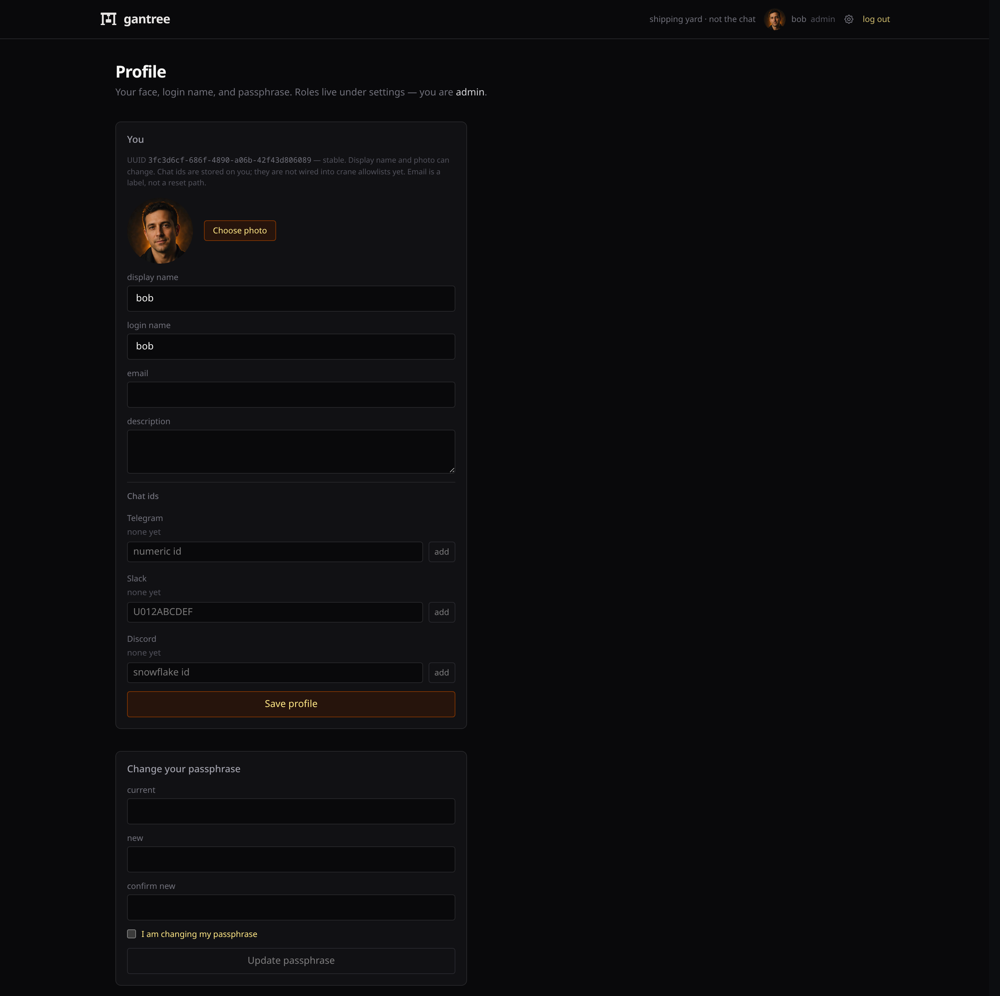
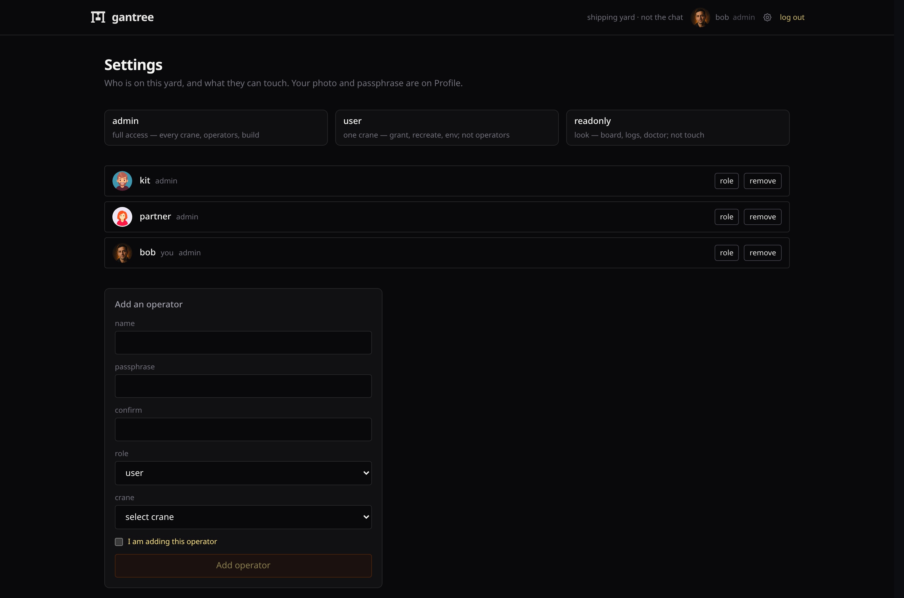

Operators — login, profile, settings
The board walk is console.md. This page is the people on the yard: first boot, your face, and who else can touch a crane. What the door actually checks: security.md.
Chat stays Telegram. Nothing here sits in a chat turn.
First boot
Need Node 22. npm start (or compose) on the Docker host.
- Open
http://127.0.0.1:3000— empty yard is/setup(one operator, always admin). - After that,
/login. Name + passphrase. - Sessions live in yard
gantree.db— not a crane’sdata/gantry.db. Compose:var/gantree.db.
There is no setup token. On an open bind, whoever POSTs /setup first
owns the box. Create that person before you leave LAN :80 sitting
there. A second setup is 409 already set up.




Name is 2–32 letters, digits, . _ -. Passphrase ≥10 characters,
not blank, not your name, not a common password. Failed logins back off
(8 per name / 15 minutes). Full rules:
security.md.
Local screenshots / npm run dev: GANTREE_DEV=1 plus operator +
passphrase in .env (.env.example). Loopback only —
compose HOST=0.0.0.0 ignores the flag. Unset it to photograph /login.
On a wide screen, the phone mark in the header is a 390px preview
(?phone=1) — no DevTools. Recapture: node scripts/shot.mjs.

Profile
Click your name (or photo) in the header. That is /profile. It is
not the cog, and it is not the operator list.

Here you can change:
- photo (JPEG / PNG / WebP / GIF; PNG and WebP convert on upload)
- display name (what the header shows)
- login name (what
/loginasks for) - email (a label — not a reset path, not a mailbox)
- description
- chat ids (Telegram numeric, Slack
U…, Discord snowflake) — stored on you; not wired into crane allowlists yet - passphrase (current + new + confirm, plus the confirm-scary checkbox)
Those fields are what Inject user on a crane copies into PERSONA.md
About you (name, email, timezone, location, notes, chat ids). The file
starts from the ai-gantry seed
(lib/yard/crane/templates/PERSONA.example.md). Identity — the agent’s
name — is not overwritten. Save on the crane still writes the file.
The row is a UUID. Renaming bob does not mint a new person. You cannot promote yourself from this page — role lives under Settings.
Settings
The cog in the header is /settings. (/operators redirects here.)
Everyone can read the three roles. Only admin can add, change access,
or remove.

| Role | Access |
|---|---|
| admin | Every crane. Operators. Build. |
| user | Assigned cranes (card, details, grant, recreate, env). Not operators, not other cranes. |
| readonly | Assigned cranes — look (card, logs, doctor). Not touch. Not other cranes. |
Setup always creates an admin. user and readonly need at least
one crane — without any they see an empty board. Tick more than one
when a person covers two bots. Only admin sees every crane.
Admin sees logins and logouts on the yard events strip; other roles
do not.
Do not share an admin login the way you would share a read-only
dashboard. A partner who only pastes keys is user on their crane(s).
Compose: they hit LAN :80 or the hostname file you chose, not a published
gantree :3000.
Add / remove / change access are confirm-scary (checkbox), like a token push. You cannot delete the last operator, or the last admin, or demote the last admin.
Stuck?
| Symptom | What to do |
|---|---|
| Forgot the passphrase | Stop, delete yard sqlite (gantree.db, compose: var/gantree.db), start, run /setup again. No email reset. |
too many attempts, try later |
Wait out the 15-minute window. 8 fails on one name, or 40 across all names, lock that window. |
opening the door… and it never opens |
Cookie missing or dead. Hard-refresh /login. If the process bounced mid-login, sign in again. |
| Cog does nothing useful / no add form | You are user or readonly. An admin assigns roles. Photo and passphrase are still on Profile. |
| Logged in as user or readonly, board is empty | No crane on that row. Admin: Settings → role → tick the crane(s). |
| Cannot remove kit / cannot demote bob | Last operator, or last admin. Add another admin first. |
/login never appears in npm run dev |
GANTREE_DEV is on and loopback. Unset it to photograph or test the door. |
| Name exists, passphrase rejected at auto-login | GANTREE_DEV_PASSPHRASE must match the hash already in sqlite — or pick a new operator name. |
Bind (loopback vs LAN vs tunnel): install.md · headless.md. Hardening: security.md.